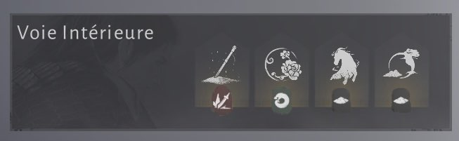

WHERE WINDS MEET
Les Voies Intérieures sont des compétences passives équipables. Elles renforcent ton personnage avec des bonus de dégâts, défense, soin, mobilité, endurance, poison, saignement ou synergies avec certaines armes.
À retenir : les Arts Martiaux sont tes attaques, les Voies Intérieures sont les passifs qui optimisent ton build.
Conseil : choisis tes voies selon ton arme principale, ton Path et ton style de jeu.

Voici à quoi ressemble le système des Voies Intérieures directement en jeu. Les Voies Intérieures sont placées dans différents emplacements et peuvent être équipées pour créer des synergies avec ton arme et ton style de jeu.